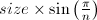

In this task, we will use the turtle graphics module for drawing basic shapes, by moving a 'turtle' across the screen, drawing a path as it travels. We can use the turtle functionality if we put the line import turtle at the top of our file. The turtle module contains many functions, we will use the following:
The turtle begins facing 'east' (i.e. to the right). For example, the following code produces the image below.
import turtle def demo(): turtle.forward(100) turtle.left(120) turtle.forward(80) turtle.right(90) turtle.forward(80) turtle.exitonclick() demo()
Create a file which contains the following functions. NOTE:
rectangle(a, b), which draws a rectangle with the given side lengths. Ensure that the cursor finishes pointing east.
rotated_rectangle(a, b, angle), which draws a rectangle rotated anticlockwise by the given angle. Ensure that the cursor finishes pointing east.

Hint: This can be done in only five lines of code, including the "def ..." and "turtle.exitonclick()" lines.
polygon(size, n), which draws a regular polygon with n sides, and side length .
Hint: If the turtle moves anti-clockwise, it will turn a total of 360°, in n equal movements. The math module contains trigonometric functions and mathematical constants. Remember to import math.
interact(), which first asks the user for a distance, then repeatedly asks for a direction to move, from the options n/s/e/w (north/south/east/west respectively), and then moves in that direction by the given distance. If the user enters q, the turtle window closes and the function ends. If the user enters any other input, an error message is printed, as in the example.
Write a function spiral(n), which draws a square spiral with n lines, which have length 20, 20, 40, 40, 60, 60, …. The example below shows a spiral of 20 lines which makes five full revolutions.